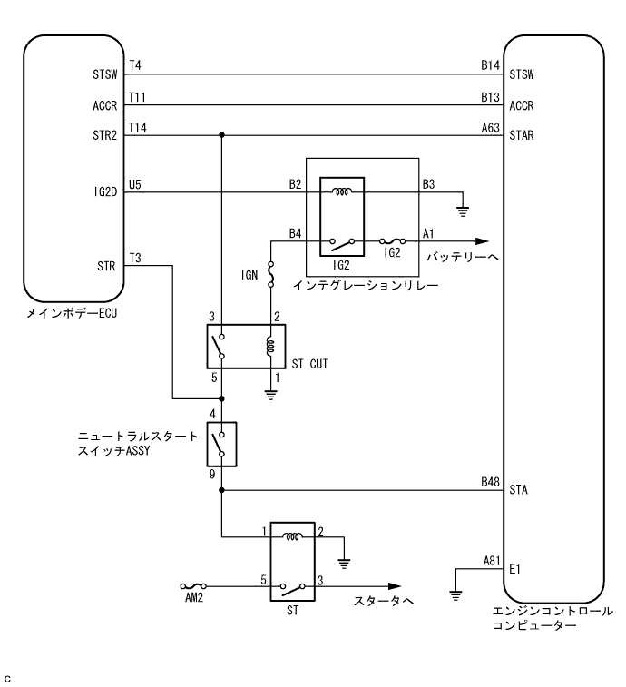
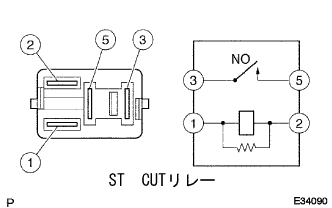
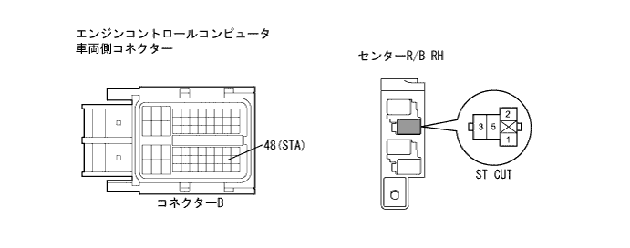
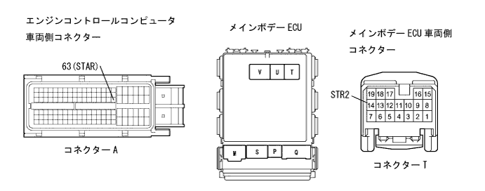
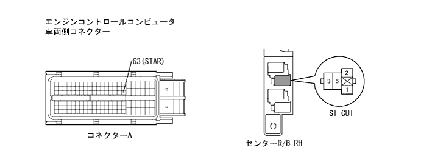
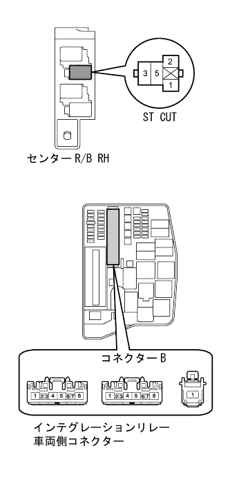

DTC P0617/43 Starter Circuit (High) |

| DTC No. SAE/TCCS | DTC Detection Condition
| Inspection Area |
|---|---|---|
| P0617/43 |
|
|

| Step 1 | Perform TaSCAN Active Test (Starter Relay) |
Connect SST (TaSCAN) to DLC3.
Turn IG ON.
Using SST (TaSCAN), follow the on-screen instructions and select [Active Test] - [Starter Relay].
Read [ECU Data Monitor] - [Starter Signal] while performing the Active Test.
| Starter Relay | Starter Signal |
|---|---|
| ON | ON |
| OFF | OFF |
|
| ||||
| OK | ||
| ||
| Step 2 | Inspect Neutral Start Switch Assembly (Short Circuit Inspection) |
Disconnect the neutral start switch assembly connector.
 |
Using SST (Toyota electrical tester), measure the resistance between the terminals of the connector.
| Tester Connection (Terminal Symbol) | Condition | Standard |
|---|---|---|
| 4(B) - 9(L) | P, N position | Below 1 Ω |
| Other than P, N position | 10k Ω or higher |
|
| ||||
| OK | |
| Step 3 | Inspect ST CUT Relay |
 |
Continuity Inspection
Using the SST (Toyota electrical tester), measure the resistance between each terminal.
| Tester Connection | Condition | Standard |
|---|---|---|
| 1 - 2 | Always | 166.7Ω |
| 3 - 5 | Always | 10k Ω or higher |
Using SST (Toyota electrical tester), measure the resistance between terminals 3 ←→ 5 when battery voltage is applied between terminals 1 - 2.
| Tester Connection | Condition | Standard |
|---|---|---|
| 3 - 5 | Battery voltage applied between terminals 1 - 2 | Below 1 Ω |
|
| ||||
| OK | |
| Step 4 | Inspect Wire Harness and Connector (Engine Control Computer - ST CUT Relay) |
ReferenceConnect the neutral start switch assembly connector.
Disconnect connector B of the engine control computer.

Move the shift lever to P or N position.
Remove the ST CUT relay.
Using SST (Toyota electrical tester), measure the resistance between the engine control computer vehicle side connector and the ST CUT relay block holder. (For Terminals of ECU, see)
| Tester Connection (Terminal Symbol) | Condition | Standard |
|---|---|---|
| B48 (STA) or terminal 5 - Body ground | Always | 10k Ω or higher |
|
| ||||
| OK | |
| Step 5 | Inspect Wire Harness and Connector (Main Body ECU - Engine Control Computer) |
ReferenceDisconnect connector A of the engine control computer.

Disconnect connector T of the main body ECU.
Using SST (Toyota electrical tester), measure the resistance between the terminals of the engine control computer and main body ECU vehicle side connectors. (For Terminals of ECU, see)
| Tester Connection (Terminal Symbol) | Condition | Standard |
|---|---|---|
| A63 (STAR) or T14 (STR2) - Body ground | Always | 10k Ω or higher |
|
| ||||
| OK | |
| Step 6 | Inspect Wire Harness and Connector (Engine Control Computer - ST CUT Relay) |
ReferenceRemove the ST CUT relay.
Using SST (Toyota electrical tester), measure the resistance between the engine control computer vehicle side connector and the ST CUT relay holder. (For Terminals of ECU, see)

| Tester Connection (Terminal Symbol) | Condition | Standard |
|---|---|---|
| A63 (STAR) or terminal 3 - Body ground | Always | 10k Ω or higher |
|
| ||||
| OK | |
| Step 7 | Inspect Wire Harness and Connector (ST CUT Relay - IG2 Relay) |
Reference |
Remove the ST CUT relay.
Remove the integration relay from the engine room R/B.
Using SST (Toyota electrical tester), measure the resistance between the terminals.
| Tester Connection (Terminal Symbol) | Condition | Standard |
|---|---|---|
| Terminal 2 or B4 - Body ground | Always | 10k Ω or higher |
|
| ||||
| OK | ||
| ||